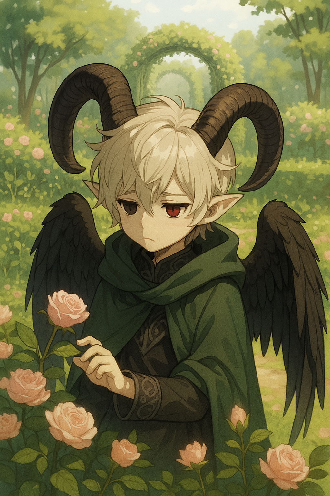
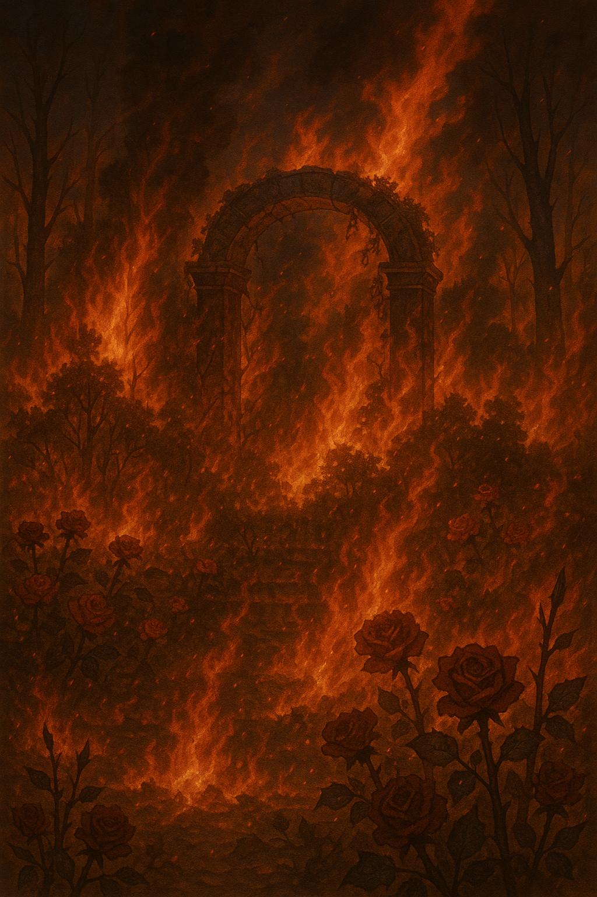
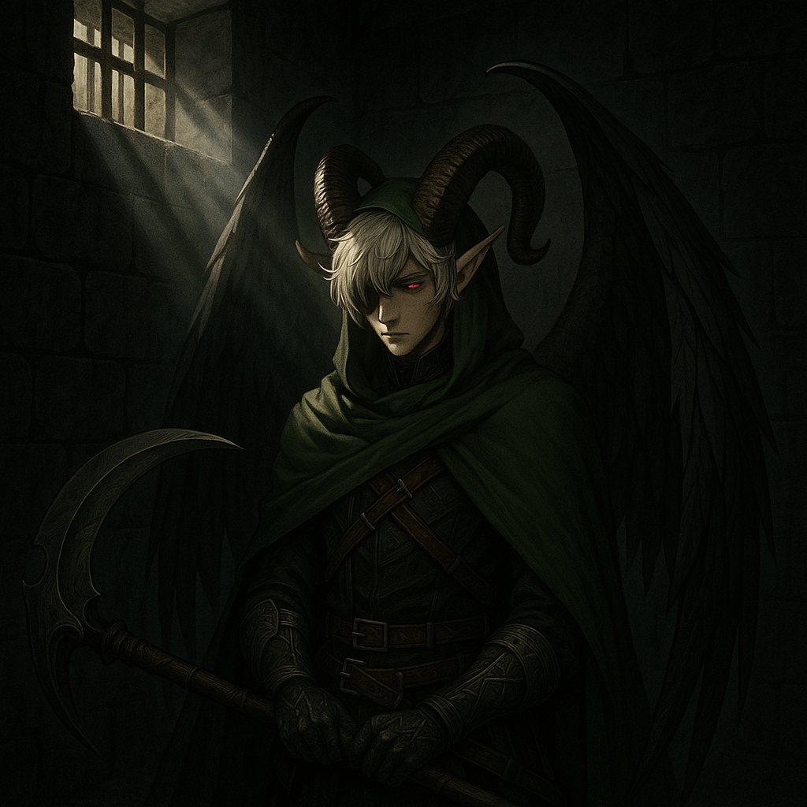
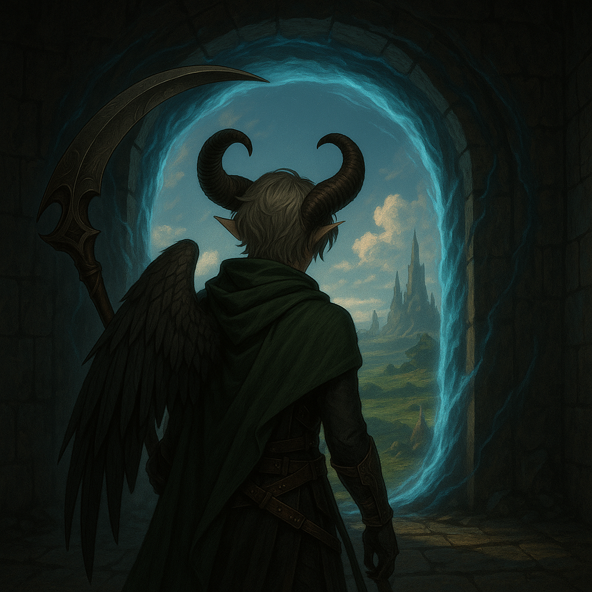

"Nasci no Éden... mas floresci no Inferno."
Era uma vez uma criança que nasceu nos Jardins do Éden, no Inferno. Seu nome era Hades, Jumento de Jesus. Filho proibido de Adão, um anjo, e Maria, uma demônia, Hades cresceu sem o pai e mal via a mãe que trabalhava o tempo todo. Sofria bullying dos outros demônios por sua origem.
Desde pequeno ajudava nos Jardins do Éden, desenvolvendo habilidades como druida, compreendendo e comunicando-se com as plantas. Aos 19 anos, um misterioso sabotador destruiu parte do jardim. Hades foi injustamente acusado e aprisionado por Lúcifer no castelo por 12 dias.
Na cela escura do castelo, Hades refletia sobre sua origem, sua missão e o destino que parecia traçado para ele. A presença constante da dor, da dúvida e do abandono moldava lentamente o espírito de um guerreiro silencioso, que ainda não sabia o quanto o mundo precisava dele.
Sua mãe, em uma das visitas, lhe entregou um pó mágico que abriu um portal. Hades fugiu para o mundo humano, onde sua verdadeira história começa...
